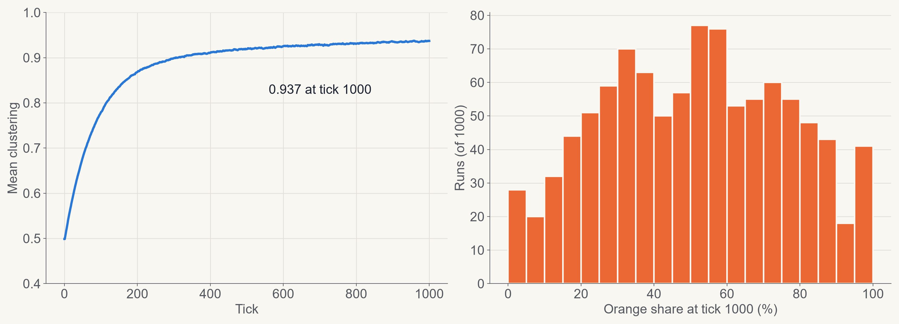
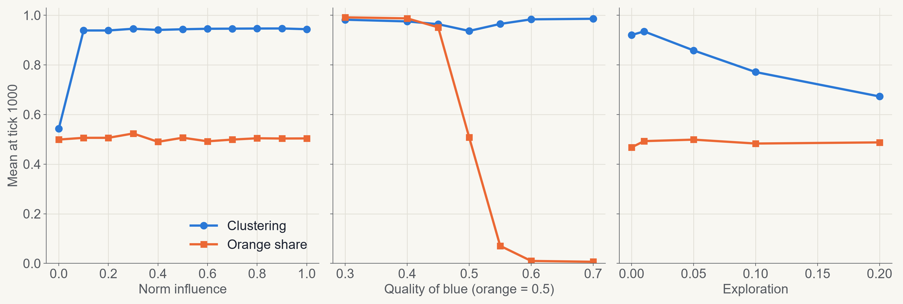
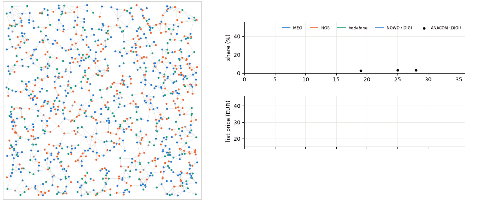
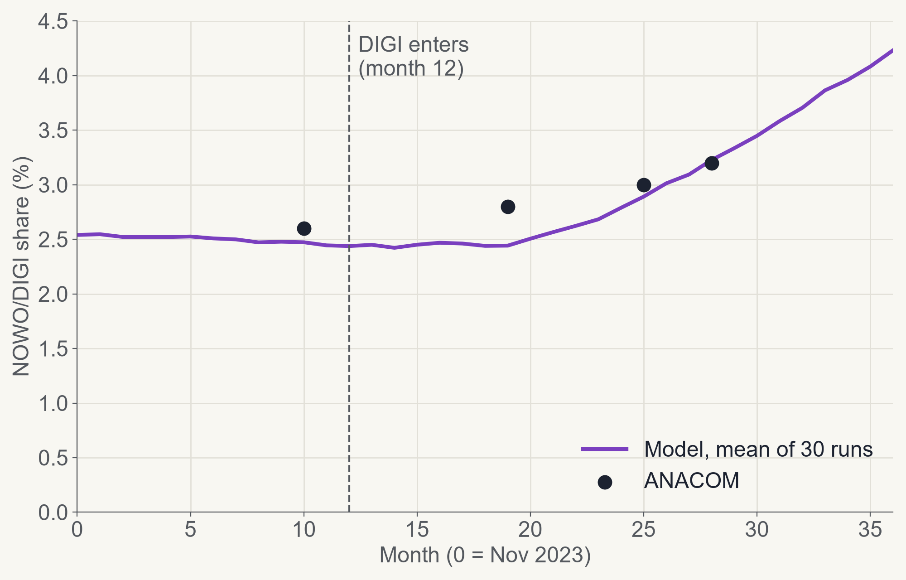
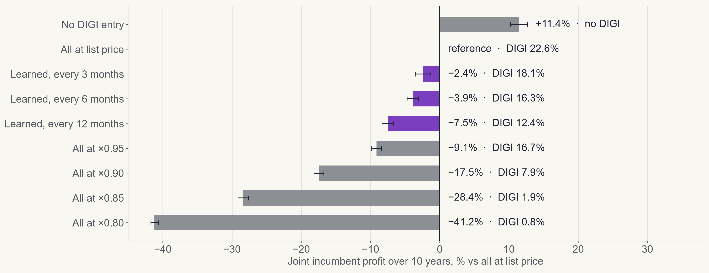
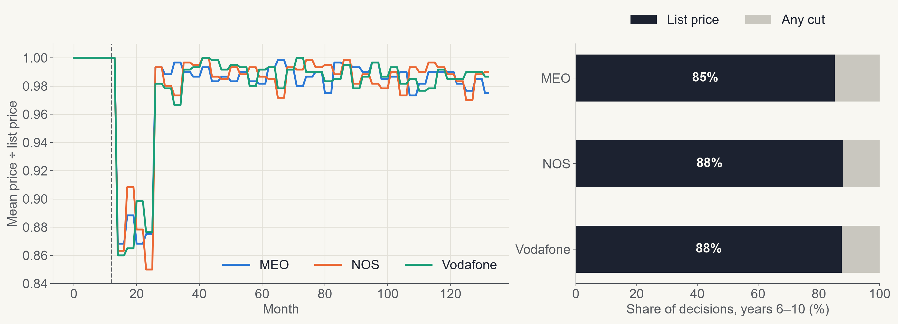
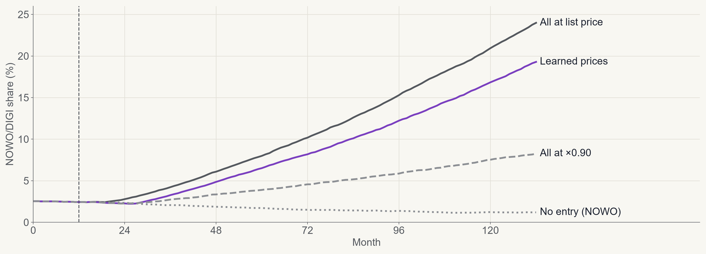
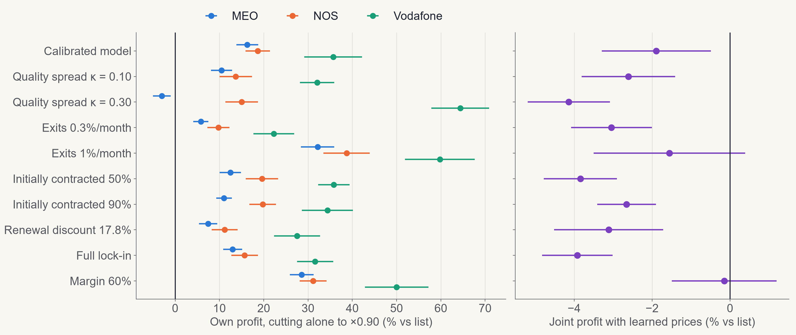

DIGI Entry: Consumer Choice Model
Project 1 · Multi-Agent Systems and Simulation of Organizations
How do incumbents respond when a low-cost rival enters?
An agent-based model of DIGI’s entry into the Portuguese bundled-services market, built on the Consumer Choice model
[Group members]
Six tasks, from baseline to conclusions
| Task | What was asked | What we did |
|---|
| 1 | Analyse the model, set a baseline | Consumer Choice rebuilt in Python and Mesa |
| 2 | Run many iterations for statistics | 1000 baseline runs; 3 sensitivity experiments |
| 3 | Fit the model to a real situation | DIGI’s entry, calibrated to ANACOM shares |
| 4 | Support it with data and articles | ANACOM, Lei 16/2022, Confraria et al. (2017) |
| 5 | Extend it with agent learning | Incumbents learn prices with a bandit |
| 6 | Run the new model and conclude | 9 one-at-a-time changes; conclusions hold |
Task 1
The decision rule: habit, exploration, utility
Consumers linked in a social network choose one of two products. Every tick, each one goes through three steps.
1. Habit
Keeps the product with probability equal to its satisfaction: log₁₀(1 + 9q)
2. Exploration
Otherwise, tries the other product with a small probability
3. Utility
Otherwise, picks the higher utility: own experience, friends’ information and the social norm
Outputs: market share of each product and clustering, the mean share of friends using the same product.
Task 2
Baseline: strong clusters, unpredictable winner

1000 runs, tick 1000. Clustering 0.937 (95% CI 0.935–0.939). Orange share 0.506 on average, but SD 0.252: equal products, very different outcomes.
Task 2
Baseline: what moves the outcome

Any norm creates clusters: clustering 0.543 at norm 0, about 0.94 from 0.1 up.
Small quality gaps decide: orange 0.951 when blue is 0.45, 0.071 when blue is 0.55.
Exploration breaks clusters: clustering falls to 0.673 at exploration 0.2.
Task 3
The real case: half the price, little share
€22
DIGI fibre + TV, against €42.49 at MEO and NOS and €40.50 at Vodafone
3 months
DIGI’s commitment, against 24 months at the incumbents
+0.6 pp
DIGI/NOWO share in about 18 months: 2.6% in Q3 2024, 3.2% in Q1 2026
Why does such a cheap entrant grow so slowly, and what is the incumbents’ best response?
Sources: ANACOM bundled services; CNN Portugal/DECO PROteste barometer, Oct 2025; Observador, 4 Nov 2024
Task 3
Same decision rule, a real market around it
| Element | Baseline | Extended model |
|---|
| Time | Abstract tick | 1 tick = 1 month |
| Products | Orange, blue | MEO, NOS, Vodafone, NOWO; NOWO becomes DIGI in month 12 |
| Initial shares | 50 / 50 | 41.8 / 35.0 / 20.6 / 2.6% (ANACOM, Q3 2024) |
| Price | None | In utility; weight tied to the norm through Confraria et al. |
| Quality | Fixed parameter | From complaints; DIGI improves over 18 months |
| Contracts | None | 24 months (DIGI 3), legal penalty, renewal with a discount |
| Population | 100, fixed | Starts at 1000; 0.5% exits per month; about 1% growth per year |
Task 3
The model running: 48 months of one simulation

Dots are consumers, coloured by operator; lines are friendships. Right: market shares and list prices, with prices learned from month 12.
Task 4
Where the parameters come from
| Parameter | Value | Source |
|---|
| Shares, targets | DIGI 2.8 / 3.0 / 3.2% | ANACOM, months 19 / 25 / 28 |
| Quality | q = 0.80 − 0.20 · ln(r) | ANACOM complaints; κ is assumed |
| Price weight | €10.22 per unit of share | Confraria et al. (2017), Table 4 |
| Commitment cost | €5.25/month for 24 months, ±50% | Confraria et al. (2017); spread assumed |
| Early-exit penalty | 50% in year 1, 30% in year 2 | Lei 16/2022 |
| Margin | 40% | EBITDA 2024: NOS 45.3%, MEO 35.8% |
| Under contract at start | 70% | Assumed; no public data; tested 50–90% |
| Renewal discount | 10% | Group decision; 17.8% tested |
Tasks 3 and 4
Calibration against ANACOM

| Month | Model | ANACOM |
|---|
| 19 | 2.4% | 2.8% |
| 25 | 2.9% | 3.0% |
| 28 | 3.2% | 3.2% |
Error 0.22 pp (RMSE, 30 runs). Target at month 28 was 3.2 ± 0.5 pp.
Fitted: norm 0.10, exploration 0.02, brand constants.
Task 5
Learning: each incumbent runs its own bandit
Who and when
MEO, NOS and Vodafone, from DIGI’s entry, every 3 months. DIGI stays at €22.
Actions
List price × 1.00, 0.95, 0.90, 0.85 or 0.80, always above unit cost (× 0.60).
Reward
The margin of the last period, not revenue. Rivals’ prices are not observed.
Method
ε-greedy, ε = 0.1, step α = 0.2. Each price is tried once, in random order.
Compared with fixed-price scenarios, using the same random numbers: 30 runs per scenario, 10 years after entry.
Task 5
Learned prices cost little; cutting together costs a lot

Paired by seed, with 95% CI. DIGI share is the mean of the last 12 months. DIGI costs the incumbents about a tenth of their profit: no-entry is +11.4%.
Task 5
A prisoner’s dilemma: each gains alone, all lose together
| Own profit vs list | Cuts alone to ×0.90 | All cut to ×0.90 |
|---|
| MEO | +14.9% | −18.3% |
| NOS | +19.3% | −8.7% |
| Vodafone | +36.2% | −30.5% |
So list price is not an equilibrium, yet it is where the joint profit is highest among the symmetric prices we tested.
Task 5
Learned prices return to the list price

Mean multiplier 0.98. Across 9 ε, α combinations: joint profit −2.2% to −4.4%, multiplier 0.97–0.98. Not learned collusion: the bandit cannot see rivals, and its 3-month reward favours keeping margin.
Task 5
DIGI grows slowly at first, then keeps gaining

Mean over the last 12 months: 22.6% at list prices, 18.1% with learned prices, 7.9% with all at ×0.90. Use these to compare scenarios: 10 years is far beyond our 30 months of data, so they are not forecasts.
Task 6
Both conclusions hold in all 9 changes

A solo cut pays for NOS (+9.8% to +38.7%) and Vodafone (+22.3% to +64.4%); only MEO at κ = 0.30 loses (−3.0%). Learned prices: multiplier 0.97–0.98, joint profit −0.1% to −4.1%.
Conclusions
Contracts and habit slow a much cheaper rival
The calibrated model reaches ANACOM’s 3.2% at month 28 at half the price.
Matching on price does not pay
All at ×0.90 stops much of DIGI’s growth, but costs 17.5% of joint profit.
Each incumbent is tempted to cut alone
A solo cut gains 14.9% to 36.2%: a prisoner’s dilemma.
Simple learners stay near list price without communicating
Consistent with what we observe: main brands kept prices, and the incumbents answered with low-cost brands.
Limitations
| Limitation | What it means |
|---|
| Long horizon | 10 years against 30 months of data: compare scenarios, do not forecast |
| Low mobility at contract end | Under 1% switch in the model; Confraria et al. estimate 13.6% (mobile, 2014) |
| Drift without DIGI | MEO 41.1% to 39.7% and NOWO 2.4% to 1.5%, months 12–72 |
| Bandit design | No view of rivals and a short reward horizon; no second low-cost brands |
| Assumed parameters | κ, the initial contract share and the commitment spread have no direct data |
References
- Jager, W., Wang, S.: NetLogo Consumer Choice model. CCL, Northwestern University (2024)
- Janssen, M.A., Jager, W.: Fashions, Habits and Changing Preferences. J. Econ. Psychol. 22(6), 745–772 (2001)
- Confraria, J., Ribeiro, T., Vasconcelos, H.: Analysis of Consumer Preferences for Mobile Telecom Plans Using a Discrete Choice Experiment. Telecommun. Policy 41(3), 157–169 (2017)
- Calvano, E., Calzolari, G., Denicolò, V., Pastorello, S.: Artificial Intelligence, Algorithmic Pricing, and Collusion. Am. Econ. Rev. 110(10), 3267–3297 (2020)
- Sutton, R.S., Barto, A.G.: Reinforcement Learning: An Introduction, 2nd edn. MIT Press (2018)
- ter Hoeven, E., et al.: Mesa 3: Agent-Based Modeling with Python in 2025. JOSS 10(107), 7668 (2025)
- Data: ANACOM (bundled services, complaints); CNN Portugal/DECO PROteste barometer (Oct 2025); Observador (4 Nov 2024); Lei 16/2022